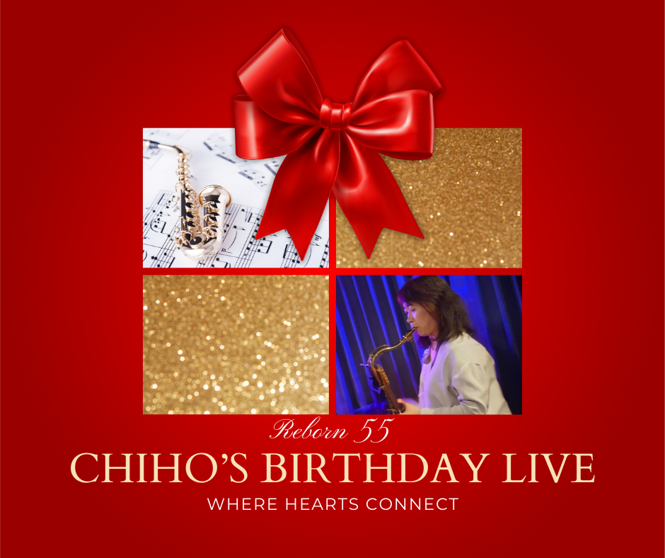
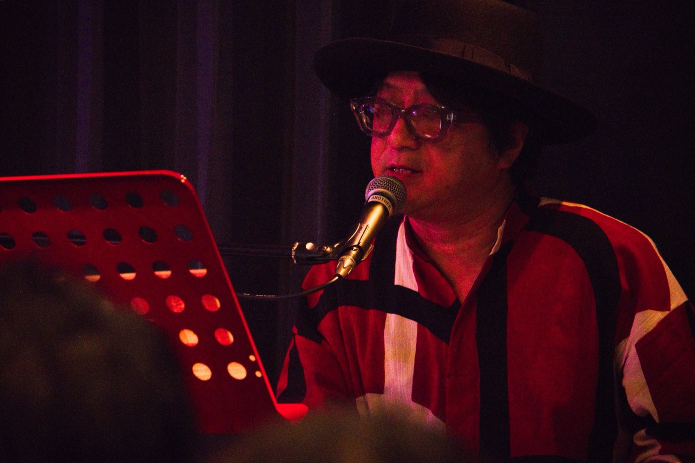
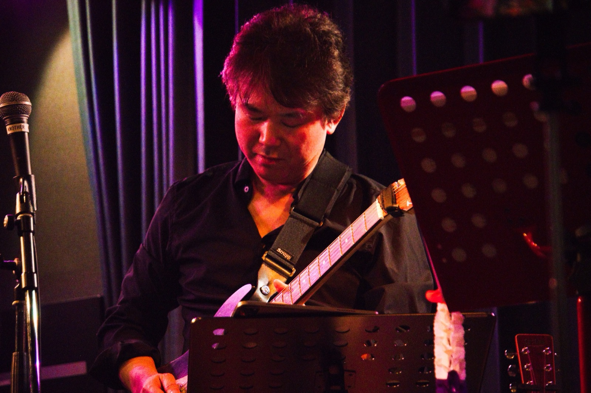
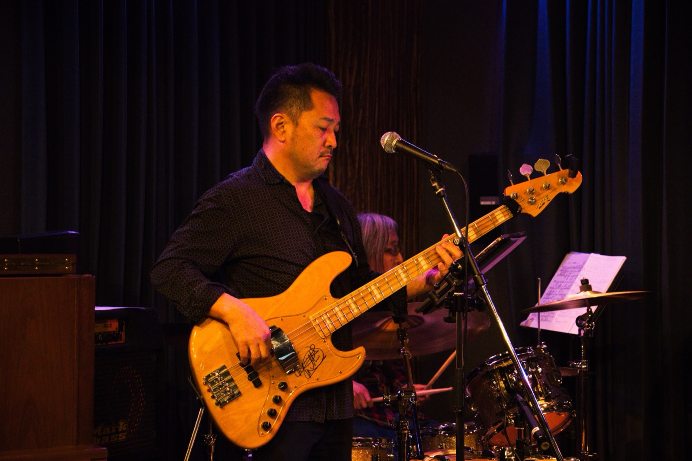
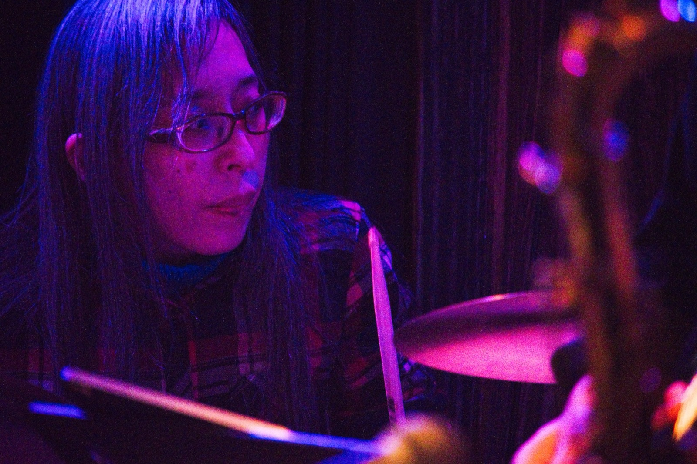

【Chiho's Birthday Live 2026】
ご協力ありがとうございました✨💖
皆様の温かいサポートのもと、ライブは無事終えることができました。
たいへん感謝しております!!
当日の記録をこちらに残しておきます。
⭐️ YouTube : Stage 1
⭐️ YouTube : Stage 2
⭐️ YouTube : Stage 3
(Special Thanks for Ikeさん✨💖)
プレイヤー別ビデオ📹
Photo Album 📸
▶︎ Google Photo by かずきさん
公式LINE でお届けさせていただきましたバンドメンバーのご紹介を
こちらにまとめました🎵
あなたの歌を支えてくれるアーティストをご紹介します🎹 🎸 🥁 🎸
バンドメンバー紹介 ＋α
🎹 ピアノ : Nobuさん

いつも優しい微笑みを讃えつつ、どんなリクエストにも答えてくださいます!!
素晴らしいプレイヤーです✨💖
会場・トモキョンズで開かれている、月イチのセッションでお会いしました。
ご自身が出されているCDの楽曲も今日演奏されます🎹
とても素敵な曲がたくさん詰まっていますので、
気になる方はぜひNobuさんのFB確認してみてくださいね〜
ライブもよく開かれています🎵
とても楽しい方で、おやじギャグが止まらなくなることがあります!!? 🥸
歌もお上手で、弾き語りも絶品です🎤
今回ももしかしたら!?? 楽しみにしていてください!!
▶︎ Nobu : 音ごよみ (YouTube)
▶︎ Nobu Music Land
▶︎ Facebook : Nobu Toyama
🎵
🎸 ギター : 松橋さん

松橋さんは実はビジネス書の著者でもあり、
これまでに33冊の本を出版されています📚
松橋さんの人生、まるで映画のよう🎬
青森から「ギタリストになる!」という夢を持って上京しました。
でも夢は叶わず、セールスマンの道へ転身。
最初はなかなか売れず、苦戦の日々😰
そこで「人の心の動きを理解して、実践に活かす心理学」を学んで使って見たそう。
すると、ガラッと変わり、
会社で売上No.1のセールスマンになったそうです。
しかし、その後リストラにあい、フリーの講師に。
書いていたブログが出版社の目が止まって著者になったとのこと。
📕 1月に出た最新作はこちら ↓
☝️ コミュニケーションをよりよくされたい方におすすめです!
▶︎ 松橋 良紀 : コミュニケーション研究所
▶︎ 松橋良紀 : Facebook
🎵
🎸 ベース : 浩二郎さん

浩二郎さんとは昨年秋の祖師ヶ谷大蔵でのライブでお知り合いになり、
その後セッションでご一緒させていただくようになりました。
安定感のあるベースと穏やかな笑顔で、
いつもバンドをガッチリ支えてくださいます✨
とても話しやすいのでついつい甘えさせていただき;;
音楽の趣味も合うので、次はあの曲やりたいです〜!! ってお願いしたり。
出会って半年とは思えない
……のは、私が図々しいだけですが!! 😅
コーラスもお上手で22日もコーラス入れていただけそうです🎵
歌声も楽しみにしていてくださいね〜🎤
浩二郎さんはアマチュアなんですが、
アマチュアとは思えない素晴らしい技量とグルーブ感にいつも痺れます✨
▶︎ 谷口 浩二郎さん Facebook
🎵
🥁 ドラムス : ひろえちゃん

プロのドラマーさんで、赤坂でのセッションでお世話になりました🥁
ジャズから昭和歌謡、今ドキのJ-POPまでなんでも叩ける!!
かっこいい女性ドラマーさんです。
セッションでは、一晩で40曲近くの演奏をすることもありましたが、
最後までタフに叩き切る素晴らしい腕前です!!
その力強さから一転して、
お話しするとすごく爽やかで可愛らしい、素敵な女性です✨💖
🎵
🎤 PA : マロさん
PAというのは音響係で、
マイクやアンプの音量や音質の調整をお願いしています。
マロさんはよくこのトモキョンズで開かれる広尾セッションでも
PA係をしてくださっているので、こちらの機材についても熟知してくださっています。
みなさまの歌声や演奏をいい感じに響かせてくださるはずです💫
ご自身も歌ったり🎤ギターやベース🎸を弾いたり、
はたまた作曲📖したりととても多彩なマロさん✨🌿
ライブ活動も頻繁にされていますので、ぜひご興味のある方は訪れてみてくださいね🎵
🎵
本当はお写真も合わせて載せたかったのですが、、、
当日のお楽しみということで!!
また、今回お客様で、歌ではなく
演奏でのご参加をいただく方もいらっしゃいます。
その方々のご紹介は当日させていただきますね〜
開催概要
この度はお申し込みいただき、誠にありがとうございました。
以下の概要をご確認ください。
- 開催日 : 2026年2月22日 日曜日
- 時間 : 13:00 - 15:30 (受付 : 12:40 開始)
- 場所 : 東京 広尾・Tomo,K’yon,S (トモキョンズ) 地下一階 ライブ会場
(東京都渋谷区広尾5-12-3 Tomo,K’yon,Sビル B1)
広尾駅・徒歩5分
▶︎ Googleマップ
🌟 建物前の階段にて、地下一階のライブ会場にお越しください。
- 受付 : 地下ライブハウス 入口 受付にて、お名前をお伝えください。
- 受付時に、ドリンクチケットを1枚お渡しします。
カウンターにてお好きな飲み物をお受け取りください。
- 軽食をご準備しておりますので、ご自由にお取りください。
- 当日の一日前に、リマインドでメールを送らせていただきます。
ご来場時の参考になさってください。
歌ってくださる方へ
この度は歌ってくださるとのことで、ありがとうございます!!
生バンドで一緒にサポートさせていただきます。ぜひご自慢の歌声を響かせてください!!
まず! 以下のフォームにエントリーをお願いします
歌う曲目を1曲決めていただきましたら、以下リンク先Googleフォームにて、
曲目とYouTubeリンクをお送りください。
▶︎ Chiho's Birthday Live 2026 : エントリーフォーム (Googleフォーム)
締切 : 2026 / 1/31 (土曜日) 23:59
時間の都合上、先着20名様(前後)とさせていただきます。
なるべく融通させてみなさまにお楽しみいただけるようにしたいと考えておりますが、
状況によっては早めに締め切らせていただくことがありますので、
何卒ご了承ください。※ エントリー時に曲目が決まっていらっしゃらない場合は、ひとまず"未定"とご入力ください。
決定後に修正していただくことで構いません。(※ 曲目が被りそうな場合は、お声がけの上、ご相談させていただくことがあります。)
◆ 千穂が過去にSaxでセッションで参加した曲目リスト (Googleスプレッドシート)
↑ ご参考まで掲載しました。これらの曲以外でもOKです!!
歌に関するご確認事項
- 曲目は自由です。どんなジャンルの曲でもOKです。
"バースデイ"ということに縛られず、ご自身が気持ちよく歌える曲を
選んでください。
- なるべく、原曲キーで歌える曲を選んでいただけますとありがたいですが、
キー変更が必要な場合は対応いたしますので、フォームにご記載ください。
- Saxが入る曲は私が一緒に演奏します。
原曲に入らない場合も、今回はつけそうな曲は入りますので
よろしくお願いします。
- こちらで楽譜を準備して、伴奏者に手配します。
歌ってくださる方にも楽譜データ(PDF)をお送りしますので、進行等ご確認ください。
- 当日は、こちらでも歌う方用のPadを準備して歌詞を表示するようにいたしますが、
ご自身でお持ちいただいた楽譜を置いていただくことも可能です。
ご来場いただくみなさまへ
- ご不明な点がありましたら、公式LINEかこちらの掲示板にて
随時お問い合わせください。
- 公式LINEは、みなさまがご入力された場合、
私にだけ届きますのでご安心ください。
- このページの掲示板機能は、自由にお使いいただいて結構です。
千穂へのメッセージでもお問い合わせでもなんでもOKです。
寒い中、連休中の貴重なお時間をいただき、ほんとうにほんとうにありがとうございます!!
歌う方も歌わない方も、みなさまが楽しめる時間になるように準備しております。
どうぞよろしくお願いいたします。
Jan. 3, 2026
益田 千穂